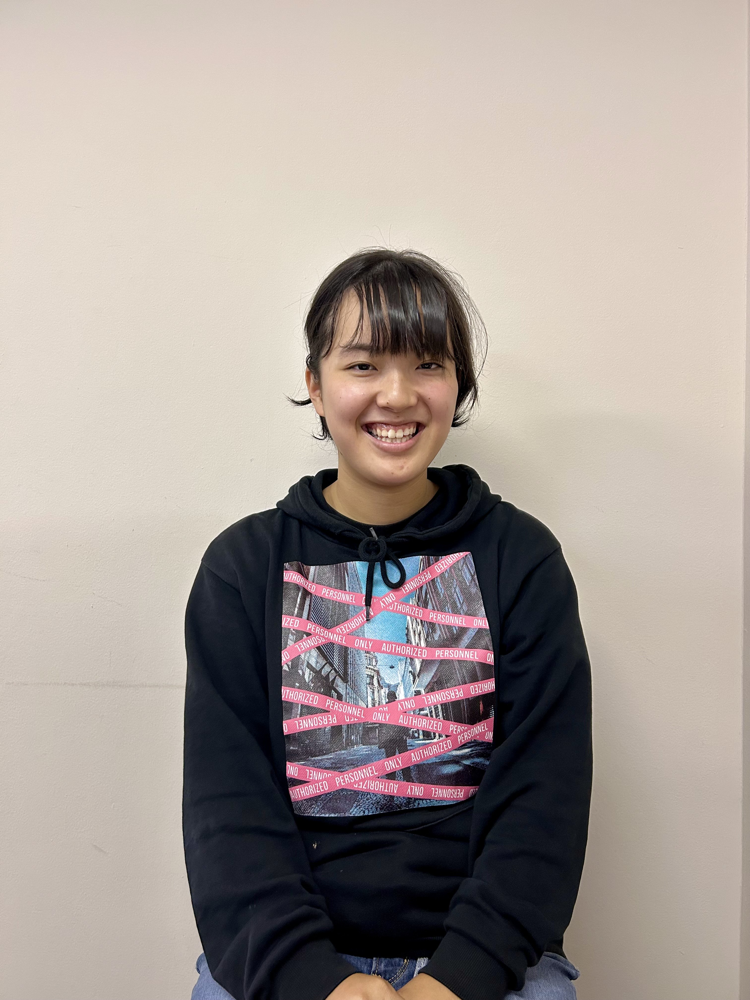
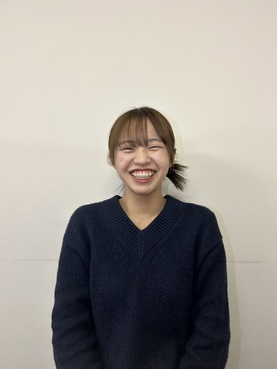
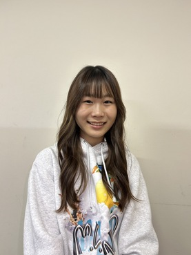

2024わかものin九州を作る実行委員たちを大紹介!!
画像をタップでプロフィールを表示してね

こうし
実行委員長

そら
フェスティバルCo.

けんけん
合宿Co.

がっちゃん
総務Co.

きなこ
広報Co./合宿

りんちゃん
全国協力隊Co./合宿

えりつぃん
フェスティバル

ふるる
フェスティバル

やきそば
合宿

まっちー
合宿

ましゅまろ
合宿

もやし
フェスティバル

なおちゃん
フェスティバル/総務

りさこ
フェスティバル

さくさん
フェスティバル

すわん
合宿

のび
合宿/総務

すず
フェスティバル/全国協力隊

とも
フェスティバル/総務

おじょう
フェスティバル

ちゃんまり
フェスティバル/全国協力隊

どんぐり
合宿

みずは
合宿

みうな
合宿

あいちゃん
合宿
しみさん
フェスティバル/全国協力隊